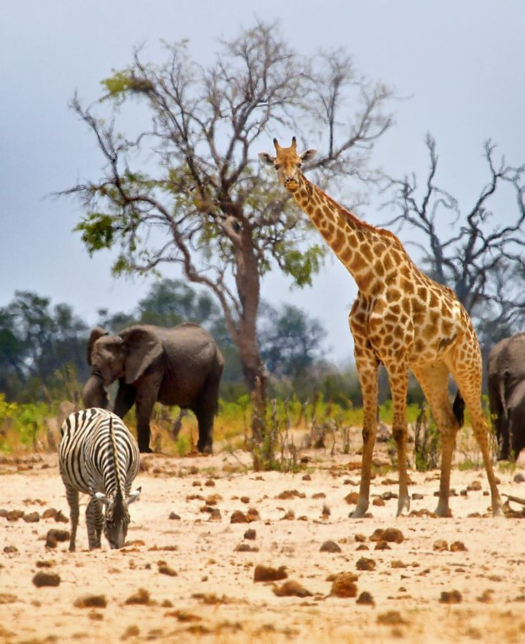

An incredible 25% of the world's biodiversity is in Africa,
and Kenya, on the eastern coast of the African continent,
is one of the ten most biodiverse countries on earth.
According to recent estimates, Kenya is home to 25,000 animal species,
including many large mammals, 7,000 plant species, and 2,000 fungi
and bacteria species. These species thrive in Kenya's rich array
of ecosystems, from lush forests and savannahs to the snow-capped
peaks of Mount Kenya and arid scrublands. There are also plenty
of aquatic habitats in Kenya, both along the coast and inland.
Kenya is home to 467 inland lake and wetland habitats,
which support a diverse selection of wildlife and animals.
Rich biodiversity and a wide variety of ecosystems allow
a large range of wildlife to thrive in Kenya.
So, let's take a closer look at some of the animals you
can find in Kenya.
